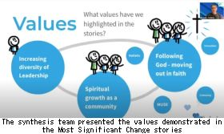
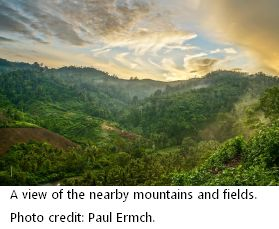
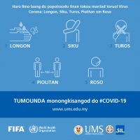
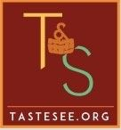
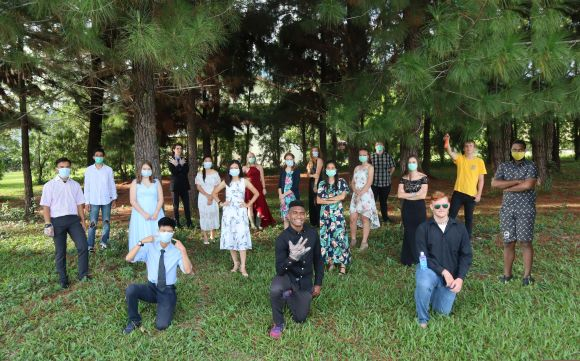

Keeping in Touch
Comments from Karsten van Riezen, Associate Executive Director for Asia/Pacific
ICONline - Inviting God into the Zoom Room
For months we had prepared for ICON20. A year ago, the board identified four themes to focus on; with Michel, we explored the concept of Double Loop Learning; Missiological Reflection material was developed; a prayer team mobilised; the facilitation team trained, and a first draft of the five-day program was designed. And then… COVID-19 came. The first outbreaks occurred in Asia. Soon Thailand, the country where the conference was supposed to be held, had its first cases. I started to mentally prepare the facilitation team that this could have major implications on how the conference might be held. “Hey guys, we better start learning about virtual tools.”

The initial responses were not very positive; people felt it would be impossible to turn a 220-participant conference into a meaningful virtual meeting. We wanted an event through which the Lord could speak to us and encourage us, so that we could discern together about the future direction. That can’t be done virtually!
But a few brave souls began to jot down ideas, the prayer team continued to pray, and some innovators searched the internet for tools and possibilities. Slowly the realization started to unfold that maybe God was both big and small enough to fit into a Zoom room. With only two months before the actual conference was to start, the board courageously decided to go virtual. This meant that we had only eight weeks to prepare…
It is a biblical principle that, when the Lord closes a door, a window opens (e.g. Acts 16). The board encouraged us to look for the unique opportunities that virtual meetings could provide. We therefore decided to open up the opening and closing sessions to everyone in SIL, as well as to close partners. Of course, this presented an extra challenge: How do you make a meeting of such a large scale effective? Can we have a meaningful way to worship? Can we create a feeling of togetherness? And would there be ways to collect input from so many participants? We also decided to try a new Zoom feature to provide simultaneous translation in different languages. Maybe we were a little too ambitious to try that, but we are a linguistic organisation after all, aren't we?
What an encouragement when more than 800 devices connected during the opening session! That meant at least a thousand people participated in the meeting. The global way of worshipping, the inputs via the polls, and the powerful message from Michel provided a good start. Then in the following session, we moved into small group breakout meetings during which people could build community and give input through in-depth discussions. This writing is not to give an account of all that happened as you can read that in the Report from International Conference or watch it in this fun five-minute ICONline Video. Rather, it is an account of how the closing of doors has caused the opening of windows. God uses challenges to move us to greater innovation. God surprised us as a facilitation team by showing what he could do through virtual technology. It was beautiful to experience how the Lord fits as much into a Zoom room as into conference halls!
Karsten van Riezen, Associate Executive Director for Asia/Pacific, also for
Hong-Tae Jang, Area Director for South and Islands Asia and
Curtis Wong, Area Director for Mainland Asia
Global News
ICON 20a

“The history of the Church reminds us about a constant factor: no major social phenomenon or upheaval has been able to lay to rest God’s project to reveal his glory among the nations. Our own historical DNA of trusting God for the impossible reminds us that God is even more active in harsh circumstances like the ones we currently experience. The events around the world during the formative years of SIL and Wycliffe are here to re-ignite our hope. William Cameron Townsend sailed to Guatemala in 1916, in the heat of the First World War. He took the steps to form what would become the SIL in 1934 during the Great Depression that set the whole universe to despair. This ministry blossomed and resulted in the formation of Wycliffe in 1942 during the Second World War.
“The radical faith and trust in God that saw opportunities where others saw challenges fuelled the birth and emergence of SIL. Likewise, God continues to pursue His mission in spite of COVID-19…”
—Executive Director Dr. Michel Kenmogne, in his ICON20 report
Report from International Conference ICONline
ICONline Worship Videos: How Great is our God and 10,000 Reasons
Seeking Justice, Loving Mercy
Editor’s Note: In the two weeks we have taken to collect entries and prepare the Asia Bulletin, other global events have overshadowed the ongoing Covid-19 pandemic. In SIL, concerns for justice and equality are fundamental to the way we serve indigenous and minority language communities. Could it be that God has allowed one trial to create space for us to address different injustices that many face on a daily basis? Here are a few items from other SIL members for your reflection:
- Am I listening to their voices? : A personal reflection posted on the SIL Community of Grace Blog on 3 June by Nelis van den Berg, associate executive director for Central Zone. Nelis writes, “Yes, it is appropriate to cry out for justice and to insist on change. But real change starts in the hearts of people. My heart. And that means questioning myself.”
- The Minority Experience by Adrian Pei- A book review posted on the SIL Community of Grace Blog on 23 January by Keith Robinson, chief human resources officer. Keith writes, “I think the book provides a framework for personal reflection and organisational discussion. I’d recommend the book to anyone who has felt the pain of exclusion, the influence and other’s power and has been affected by their organisational past.”
- SIL Executive Director Michel Kenmogne sent a letter to SIL staff on 6 June reflecting on the history and commitment of SIL International to justice and equality and calling for us as an organization to “humbly consider the areas in which we need to continue to grow in an effort to achieve a truly inclusive community ourselves. Let us all commit to continuous reflection, in order to discern the realities that might still exclude others in SIL.” [Read More]
(Text of Michel’s letter to be manually inserted here.)
Share the “Bangkok Statement on Language and Inclusion”
In September 2019, sixteen Asia-Pacific countries endorsed the “Bangkok Statement on Language and Inclusion.” This statement represents a key development in governmental commitment to include languages spoken by minority, migrant, and refugee communities in both the formal and informal sectors, with particular relevance to early childhood literacy. The statement includes directives on “evidence-based policies” and an action plan for language-in-education policies. You can help promote the statement by sharing it and also by translating it into many more languages. Read the full statement here. If you are interested in translation, please contact ap.mlewg@gmail.com.
Area News
The Malaysia Blessing - A Multilingual Collaboration
“Our church buildings may be closed, but the church is very much alive!” At this unique and challenging time in Malaysia, eighty churches and movements, representing hundreds of others, came together online to sing a blessing over the nation of Malaysia in English, Tamil, Bahasa Malaysia, Mandarin, Dusun, Kelabit, and Iban. More than 100 languages are spoken in Malaysia. Multilingual worship videos from India and Singapore have also been released. What a great thing!
Sulawesi Service Group Gets New Name, New Leader

The Sulawesi Service Group (SSG) was reconfigured in January 2020 and renamed the Mountain Service Group, further sharpening SIL's identity and purpose. Paul Emch has taken over coordinating from David Blake. Many coastal groups previously served by SSG are merged with the Western Indonesia Service Group. [Read More]
The Sulawesi Service Group (SSG) has served many of the language communities of Sulawesi, Indonesia, since 2012. Traditionally, SSG pursued a two-pronged strategy: the Mountain Strategy, which focused on about forty people groups that had a church presence and, in some cases, translated Scriptures; and a Coastal Strategy prioritizing approximately seventy unreached people groups, most of which had no translated Scriptures.

Work among the more substantial proportion of remaining coastal groups merged with the Western Indonesia Service Group in October 2017 to become the Coastal Service Group. The Sulawesi Service Group was reconfigured in January 2020 and renamed the Mountain Service Group (MSG), further sharpening SIL's identity and purpose. The mountain moniker signifies priority of service to the Christian language communities of the region, which have traditionally dwelt in the mountainous areas. MSG exclusively serves Christian groups in the region through Bible translation and Scripture use and is closely aligned with Yayasan Suluh (localized SIL in Indonesia) and several local churches. Paul Emch is the coordinator of the new Mountain Service Group, taking over from David Blake. The latter previously headed up the SSG, now MSG, and has since moved on to serve as Associate Area Director for South and Islands Asia Area.
—Submitted by Paul Emch, Mountain Service Group Coordinator, SIL South & Islands Asia
Creation Care Policy: Guidance for Carbon Offset Payments
In SIL, we fly far and fly often. To offset our corporate carbon footprint, members of the Mainland Asia Leadership Team are currently looking for local environmental organizations to support financially. A few organizations will be recommended to the Operational Units (OUs). Then each OU can select the organization they wish to fund. Read more about the Creation Care Policy, here.
—Submitted by Wendy Chamberlain, director for Communications Mainland Asia
COVID-19 Focus
Community of Grace in Prayer through Covid-19
The Global Prayer Focus Team is developing a series of twenty-minute prayer and reflection guides. They are offered as a resource for SIL global staff to draw near to the Lord, experience His grace in this time of need, and pray for our world. As a community of grace, let’s journey together through this time, growing together in our shared faith and lived experience. Here is a link to the prayer guides in Korean, French, Spanish, and English.
- Guide 1. Resting in the Sovereignty of God
- Guide 2. Trusting Our Unchanging God
- Guide 3. Patience in Paradox
- Guide 4. Sheltering in God
- Guide 5. A Heart of Intercession (prayer focus for 30 May–12 June)
Covid-19 Info
SIL members can find COVID-19 information on Gateway and on Google Drive. Both contain identical information and are updated regularly. Under Health Resources, the ‘SIL Global Advisory Health Update’ is an up-to-date resource of concise, helpful information on the health issues which are a significant part of this situation.
Malaysia: Collaboration Amid Working Restrictions

SIL Malaysia has coordinated with the University Malaysia Sabah (UMS) to create COVID-19 education materials now available here. The posters are translated into the Kimaragang, Kadazan, Dusun Bundu, Murut Paluan, Rungus, Tobilung, and Bajau languages. Dr. Jeannet Stephen at UMS wrote, “This project would not have been possible had it not been for the support from SIL. Thank you very much… for connecting me to the team of friendly and helpful translators. I hope to work again with them and SIL in the near future.”
Since mid-March, quite a number of mother tongue translators have been unable to meet or work from their homes due to the lack of proper working equipment and internet availability, especially those in rural areas. [ Read More]
Malaysia started observing the Movement Control Order (MCO) on 18 March as a measure to minimize the spread of Covid-19. It was a 'partial lockdown' where gatherings and movements were prohibited. Because of that, all workshops and events were either postponed or cancelled. Most people, except for those serving in essential services, had to work at home or were unable to work at all.

Under these circumstances, some SIL Malaysia project teams with access to the internet have been able to meet virtually and continue their work remotely. Since 3 May, the MCO has been eased somewhat [now known as the Conditional Movement Control Order (CMCO)] and most of the economic sectors have been allowed to operate under specific standard operating procedures; large social gatherings and interstate travel are still prohibited. Schools have yet to be re-opened and education-related activities are now mostly done online. For students from minority language communities who have little-to-no internet connectivity or the equipment needed to participate in online classes, their formal studies have definitely been disrupted.
The project teams are starting to look into ways to safely conduct small group meetings in the near future. This is crucial for addressing the concerns of the minority language communities who are now more wary of people entering their villages for health and safety reasons.
—Submitted by Yin Hooi Tan, Resource Engagement Coordinator, SIL Malaysia
Transitions
Karen Block, Spiritual Formation Coordinator – Mainland Asia Area
In her new role as Spiritual Formation coordinator for Mainland Asia, Karen Block will seek to come alongside the leaders in the Area to provide resources and opportunities for all to continue to grow in spiritual maturity. Spiritual formation is our life-long journey to Christ-likeness. Spiritual practices are where God invites us to make space for his transforming work in us through the Holy Spirit. There are times we need someone to walk with us into new practices or through difficult seasons—Karen is available to help you find the right companion or assistance. [Read More]
Karen, an adult TCK/MK, served with SIL Mainland Southeast Asia Group (MSEAG) from 1990 to 2019 in many roles, including teaching and administration at Payap University, acting associate director for those on home assignment, and most recently in a member care role. For the last four years she worked from The Well International on their Soul Care Team.
Karen’s heart is to see those around her in ministry thriving (Psalm 52:8). She longs to encourage and help others move deeper in their relationship with God. The gift of hospitality—a safe space—and the gift of listening have blessed Karen, and she seeks to pass that gift on. To that end, she received training in leading contemplative retreats, spiritual direction, and debriefing. She has been leading and co-leading contemplative retreats since 2006, adding contemplative art retreats in 2011. Karen has been offering spiritual direction since 2009 and been involved in debriefing since 2010.
Services Karen can provide:
• Spiritual Direction
• Contemplative retreats: group & individual guided retreats; art retreats
• Debriefing
• Training: How to lead a contemplative/quiet day/retreat; personal/soul care planning
Areas of focus:
• Spiritual journey
• Creative ways to respond to God
• Resilience
Specialized training:
• “The Formation of Spiritual Directors” - Spiritual Growth Ministries, New Zealand
• Le Rucher Debriefing training
• SIL Peer Debriefing training
• CernySmith Assessment Coach training
• Reflection and Prayer Retreat training
—Submitted by Kimberly Ross, Assoc. A.D. for SIL Mainland Asia - Human Resources, Interim HR Director for South and Islands Asia
Position Openings
Taste&See Team Members

Do you have a burden to see translated Scriptures transform lives and communities? Are you fascinated by the many tools, apps, products and methods that are being developed in the Scripture Engagement world? Would you like the challenge of bringing a starting web-based tool to the next level of development? If so, read on!
Taste&See is an elegant web-based tool to help language communities and Scripture Engagement practitioners to assess their situation, choose relevant Scripture Engagement tools, and create plans around those tools.
We are looking for enthusiastic people to join our implementation team. Needed are: content providers, a communication and prayer coordinator, teaching and piloting facilitators and a systems manager with at least a 10% time commitment. If you are interested, contact us via info@tastesee.org.
Asia Bulletin Managing Editor
Are you experienced in writing and editing? Do you enjoy new learning opportunities and want to get a wide angle picture of how God is using SIL teams to serve minority language communities across Asia? Are you intrigued by the challenge of engaging readers and providing a communication platform for our SIL leaders, events, and partners? The Asia Bulletin is looking for a new managing editor by July 15. Transitional training and opportunities to explore and develop your communication skills will be available. If you are interested or would like to learn more, contact Heidi Hagenlocher.
Please pray that God will raise up and equip new leaders for these position openings.
Resources
SIL Publicity Guidelines
Communicating more online? Be sure to check out the SIL International Publicity Guidelines… [Read More]
In these days of increased online communication, be sure to review the SIL International Publicity Guidelines resources available on Gateway. Guidelines are provided in four quick-look divisions: Sensitive Locations, Sensitive Information Policy, SIL Guidelines by Area, and Media Relations Policy. If you have questions contact Heidi Hagenlocher, director for communications, South and Islands Asia.
Pike Center Small Grants
Need funding for research or planning projects? For details on the Pike Center Small Grants, [Read More].
The next round begins on August 20, the deadline to submit a Letter of Intent. The program supports both research planning projects (which result in the submission of a larger funding proposal) and research projects (which result in the publication of research results). In the case of the former, a small grant could be used to convene the project team for a planning meeting; in the case of the latter, it could be used to fund the presentation of your work at a conference as a step toward publication. See the Listing of small grants awarded for examples of successful proposals and the Program Guidelines for the details on eligibility and how to apply.
How to Offer Better Online Training
Want tools and tips on how to offer more effective online training? To join a forum by the Online Learning & Instructional Design team, [ Read More].
The pandemic not only affects what we are doing, but also how we are doing it. There is an increasing need to offer training online. The Online Learning & Instructional Design (OLID) team would like to start offering forums (via Zoom) to answer questions about transferring face-to-face training events to the online training environments or creating new online courses. Contact Bonnie Henson, director of OLID, if you would like to be included in one of these forums. In the meantime, check out the useful information available on the Online Learning Google site.
Digital Bible Library

Did you know that SIL has agreed with Wycliffe US to submit our translation projects to the Digital Bible Library (DBL) before they are shared via Scripture App Builder apps or Scripture Earth? [Read More]
Paratext projects that have been approved by a consultant can and should be submitted to the DBL for digital distribution! You do not need to wait until your project has a complete canon. Individual books can be submitted if they have been approved by a consultant for publication. Once your project is completed for publication, complete this brief form.
Through DBL, we share with websites, apps, and audio producers such as YouVersion (app and website), Global.Bible(website), Faith Comes By Hearing (FCBH) and Davar Partners International (audio).
In addition to these preferred partners, several other organizations have been vetted and approved to share our texts on their platforms.
The Digital Bible Library is a secure distribution and licensing center. Once your text has been submitted to DBL, it is easy to pass revisions on to our distribution partners. In addition, audio files produced by FCBH are automatically attached to your text records in DBL. This means that Scripture Engagement partners receive the whole package.
For answers to your questions, please check out this web page! If you still have questions, please write to the DBL Lead Curator Lois Gourley.
—Submitted by Lois Gourley, Digital Bible Library Lead Curator, WGA, WBT, SIL, SC
Scripture Forge v2 Beta.
Scripture Forge is now open for anyone to sign up and log In. Scripture Forge provides another way for translators to access Paratext projects online. Several people can edit the same verse at the same time. You can also invite users to answer questions on selected verses for Scripture Community Checking. Questions and answers can be communicated with text, audio, or both. The developers are continuing to make improvements. Check out our Road Map of what is coming next. [Read More]
Since this is beta software, to find out how Scripture Forge will work with a Paratext project, send a backup of the Paratext project to Ira Hopkinson before connecting to Scripture Forge.
To get started now go to https://beta.scriptureforge.org and use Log In With Paratext so Scripture Forge can read your Paratext projects. I highly recommend this Vimeo video to see how the community checking tool works. It is split into two parts: the first for how to set up a project for community checking and the second for how checkers will answer questions.
Scripture Forge developers are seeking feedback from early users of this new version. Also in Scripture Forge, click (top-right) to get Help (this link will take you to the help documentation pages) or Report an issue (this will open your default email program and prefill an email template to us). When reporting an issue, please give us as much information as possible.
If you would like to see it in another language and can help with translation, the developers would love to hear from you. The user interface is now available in eight languages (plus an extra English version with different date formats). Basic support is available for:
- Right-to-left languages. A menu link to help documentation
- Improved synchronization with Paratext
- Easier to create questions
- Improved question and answer workflow
- Easier to select reference text when answering a question
Translators and community checkers can login with their Facebook account, as well as with Google and Paratext.
Contact Ira Hopkinson if you have any questions.
Publications
A Major Innovation in Ethnologue 23
The Ethnologue team released a new edition on 21 February (Mother Language Day) with over 18,000 updates to the Ethnologue database since the last edition was released a year ago. In light of SIL's focus on migration and mobility, the introductory article by Gary Simons notes: In recognition of the increasing influence of human migration on the world language situation, this edition introduces one major innovation. In place of the simple listing of “immigrant languages” that was given in the country-level information in past editions, those languages are now reported with a full entry in the main alphabetical listing of languages. In making this change the total number of language-in-country entries across the world has grown from 9,583 to 11,373. Read the full article at Ethnoblog.
Get in the Loop
Stay abreast with developments through these SIL global and Asia-focused newsletters:
Join the SIL Community on Facebook for daily discussion.
Anthropology Allspice, contact Janet McLarren
Community of Grace blog, moderated by Bonnie Falk
Consultant Development and Management, George Schultz, editor
Dictionary and Lexicography Services, Verna Stutzman, editor
International Language Services News, Lois Varenkamp, editor
LEAD Community of Practice, Matt Wisbey, editor
Literati, literacy news, email LiteratiMail_Dallas@sil.org
Parent Link, for parents of MKs, Alan Farlin, editor
SIL International Translation News, Dick Kroneman, editor
Together in Prayer, contact Neil Carleton to get on the mailing list
Translation Updates, (Asia-focused) Brian Migliazza, editor
LingBits, contact Brian Migliazza, Asia Linguistics
Human Resources
Community Cafés: Writing and Prayer
Community cafés continue to meet each week. Those interested in joining a themed café can check out the options here. Weekly prayer cafés in the western, eastern, and central zones are meeting on Tuesdays. The next creative writing café meets on 24 June. If you would like to host a café on a particular theme, please contact Bonnie Falk or go to the schedule and add your information in the chart. Training is available for those who would like help with the details of hosting a café.
—Submitted by Bonnie Falk, SIL Global Communications
Training News
TCDW 2020 Goes Ahead Online
The SIL Asia Translation Consultant Development Workshop (TCDW) 2020 will go online 15-26 June with the first two weeks of online classroom instruction. The second two weeks of supervised checks will be postponed at this time. Please pray for wisdom for the organisers and for the thirteen instructors, and twenty-eight Consultants-in-Training.
—Submitted by Angie Foo, Asia BT Coordination Team Facilitator
Forum on Localisation
“We are in the same journey together in localisation, whether for SIL leaders or local units. This forum gave a place to learn from each other.”
The Forum on Localisation, originally scheduled for face-to-face meetings in Malaysia, transitioned to meet virtually six times over two weeks beginning 24 March. The objective was to encourage and support one another while considering the new ways of being SIL that are emerging around the world, and to bring together what we are learning about this ‘emerging SIL’. Despite the virtual format, several participants remarked on how surprisingly rich and warm the connections were, as they exchanged what God had put on their hearts.
It was beautiful to hear the variety of initiatives and approaches throughout these presentations… [Read More] and to see how our common vision and values are expressed in different contexts.
The forum included representatives from several parts of the emerging SIL, including leaders from Operational Units (OUs) that are becoming increasingly localised, representatives from local organisations that are becoming increasingly 'SIL', representatives of SIL at a global level (members of SIL Global Operations, the Executive Leadership Team, and Language Services). Participants brought perspectives from Uganda, Bangladesh, India (Three Strands), Singapore (Wordly), Ivory Coast, Indonesia (Yayasan Suluh Insan Lestari), and Australia.
The first day focused on what holds SIL together, exploring as a group the impact of SIL’s vision, mission, transformation statements, core values, and doctrinal statements. The participants also presented their own journeys with SIL, describing their distinctive values, challenges, and lessons learned.
This was complemented by the opportunity to hear from the leadership of Operation Mobilization about their organisational journey over the past few years. They shared how they have invested in managing the polarities of both strong leadership at the centre and strong local ownership and leadership. This provided lots to think about in terms of embracing diversity, cultural intelligence, and the importance of prayer.
During the second week, sessions focused on specific areas of challenge: how to structure the relationships between boards at the local and global level; the processes of mutually establishing and aligning with best practices in language work, data management, and human resources; and different approaches to resourcing (both human and financial) in a diversified and decentralised organisation. These are not easy problems to resolve, and it was great to learn from each other.
The discussions provided some useful next steps for each of the participants as they venture into this new territory, as well as paving the way for other parts of the organisation setting out on a similar path.
—Submitted by Phil King, Localisation Team
LEAD Asia-Pacific
For Such a Time as This: Discussion Template
Would you like to help a group to grapple with a godly response to the pandemic? For details on an online discussion template by the Participatory Approach support team, [Read More].
At the beginning of April, the Participatory Approach support team facilitated an online discussion entitled “For Such a Time as This: Reflection on a Christian Response to Covid-19”. More than twenty people attended, with participants joining the call from many countries, representing diverse experiences during this pandemic. The call gave the whole group an opportunity to process what they were experiencing and feeling in a virtual community setting. It then helped the group transition from defining and understanding these challenges, to focusing on Bible verses and stories that provide a precedent for ways that a believer can respond to difficult and uncertain circumstances. The group also spent time thinking and planning for biblical things that they could each do in their context to minister to those around them. Participants felt the call was very beneficial. Since the first call, the template and format of the call have been used for online discussions with several other groups.
—Submitted by Monica Rempel, LEAD Asia-Pacific
Workshops and Events
Introduction to Language Development
1 June–10 July 2020
5 Oct–13 Nov 2020
For more information and registration for this course click here. Course fees for this six-week course, taught live by Dave Eberhard, are: $35 for SIL staff, $150 for partners, $300 for the general public.
Online Training for Taste&See
11 June: 3:00-5:00 p.m. GMT (for Western hemisphere)
16 June: 7:00-9:00 a.m. GMT (for Eastern hemisphere)

Due to high demand, we have added additional Taste&See training opportunities! We need your help with pilot projects! More dates to follow - please, line up!
The Taste&See website is a powerful tool for helping local leaders make informed Scripture Engagement (SE) decisions. It organizes a wide variety of SE products and activities in an attractive, user-friendly way. [Read More]
Translators, language personnel, SE workers, and consultants are critical in this process to help local people navigate the website and think through the cultural issues involved clearly and thoroughly. This training will focus on how to work through the Taste&See site with local community leaders.
To make the Taste&See website as effective as possible, we need your input. After the training, we invite you to become part of a pilot project by working with a minority language community to help them develop a Scripture Engagement roadmap using Taste&See. We appreciate your feedback in this process so that the development team can continue to improve this tool. You can find more information here. Contact Kyle Harris if you have questions.
—Submitted by Jaap Feenstra, SIL International Strategy Consultant
Online Anthropology Course
6-10 July 2020
SIL Australia is offering an MA Anthropology unit in online format. The Gospel, Cultural Anthropology and Ethnographic Methods, taught by Dr. David Troolin, SIL Pacific Language Program Services will be taught as an intensive, with coursework for students taking the course for credit. The intensive is also available for audit. Click here for more information or contact David Nicholls.
—Submitted by Brian Migliazza, Asia Linguistics
International Media Services (IMS) Virtual Summit
19-21 August 2020
IMS will offer a virtual summit with the theme: Understanding the Times—Resources for the task, looking at localization and digital strategies for engagement and sustainability and bridging the boundaries that define the context of the communities being reached (with a closer look at MUSE initiative). The course will meet three hours each day. Learn more here.
Registration is required in order to receive further details and times of sessions. To register or for more information contact Margaret Doll.
Moorlands College: Short courses for professional development
The School of Language and Scripture at Moorlands College, Christchurch, U.K., offers a number of short courses that can contribute to your professional development or the professional development of your team. Explore courses like Planning for Transformation and Multilingual Education on the website. The school offers academic and professional training that meets initial requirements and provides further training for personnel working with SIL International and partners. The school is a member of the European Training Network, which offers similar training at a variety of locations across Europe in other European languages.
Grammar Writing Services
For those who need skills for language analysis, Grammar Writing Services (GWS) offers workshops on Grammatical Description, Tone, Discover Your Language, Rapid Grammar Collection, and Discourse Analysis. These workshops train language teams and those who assist them. They can be offered nearly anywhere in the world and can be tailored to specific contexts. Local staff can be mentored.
Click here for more information about Grammar Writing Services and each workshop, as well as a workshop request form. If you need help deciding which workshop is best for your situation, write to Tim Stirtz, GWS Coordinator. He will be glad to send you information or arrange to discuss your situation.
2020 Oral Bible Translation Conference
10-14 November 2020, Nairobi, Kenya
Go to the conference website for more details, or email the OBT conference coordinators for further information.
Bible Translation Conference 2021
January to May 2021: Abstract submissions
15-19 October 2021: Conference. Dallas, Texas
Watch the BT Conference website for further information and plan to register early. The 2019 conference sold out and registration closed by the end of August. If you have questions, email admin@btconference.org.
Photo of the Month

Sentani, Papua, Indonesia:
Hillcrest School Class of 2020 took one last (socially-distanced) class photo two days before the students started to disperse. The airport closed on 26 March and remains closed. Eight students, out of a class of eighteen, left Papua, because of Covid-19. Photo Credit: Peter Seow
See more Covid 19 photos from Hillcrest and Sentani here.
Ever need a good photo? Check out Wycliffe’s Skip site.
SIL International has a photo contest. The theme for May/June is “Light”: Follow this link for context guidelines and to submit your photos.
From the Editor: Liminal Space
“Your pattern of worship will change. Today all of you are doing as you please, because you have not yet arrived at the place of rest, the land the Lord your God is giving you as your special possession.” Deuteronomy 12:8 (NLT)
Housebound! How long till we can venture out without masks? How long till we can drive again? Will the world ever be the same?
I was 13 years old. That Sunday we had gone to church as usual, and then my father and I saddled up a pair of horses for a ride into the mountains. Overhead the sun shone through a faint cloud cover with an eerie golden light. “Those sure don’t feel like rain clouds,” my dad remarked. The sky overhead grew heavier and darker as billowing grey clouds blocked out the sun. We rode through quiet pine forests with a vague sense of unsettledness under a sky laden with clouds like we had ever seen before.
We did not realize that earlier that morning, a day’s drive west of us, Mount St. Helens had erupted. The force of the blast was 1600 times as great as the atomic bomb that leveled Hiroshima. It flattened 10 million trees, buried the river and lake in 150 feet of debris, and sent a plume of 540 million tons of ash twelve miles high. In the night, the “clouds” settled. Housebound, in the new grey world, we could not imagine when color would ever return. We had entered a liminal space.
Richard Rohr, a Franciscan friar, describes liminal space as “where we are betwixt and between the familiar and the completely unknown. There alone is our old world left behind, while we are not yet sure of the new existence… The threshold is God’s waiting room. Here we are taught openness and patience as we come to expect an appointment with the divine Doctor.”
Scripture and life are full of liminal spaces. Moses spent forty years in the desert. Joshua waited forty years to enter the promised land. Mary waited nine months for the birth of her Child. The disciples kept vigil for three days following Jesus' crucifixion. Cornelius waited four days to hear what message Paul would bring.
Back in 1980, after Mount St. Helens erupted, life in the Northwestern United States ground to an uncertain halt. Yet within ten miles of the volcano, hidden from the world, avalanche lilies pushed through the sludge, blossoming 21 days after the devastation.
Now, in this time of uncertainty, we are all uniquely restricted, from conference organizers to mother-tongue translators to graduating MKs. We cannot know all the ways God is at work, but we can be alert and ready, standing in the gap, vigilant in prayer, confident that God’s Word is bearing fruit, that his Holy Spirit is present where we cannot be. As we walk through the valley of the shadow of death, we have hope.
[Comments]
—Adina Em, Asia Bulletin Managing Editor.
Do you enjoy writing and editing and have technical skills? The Asia Bulletin managing editor position is open. We are also looking for more writers, including writers in non-English languages. Please contact the Asia Bulletin if you would like to join our team, and we can discuss how your skill set could strengthen communications across Asia.